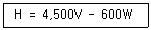
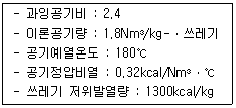
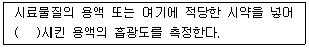

폐기물처리산업기사 (2006-03-05 기출문제)
1과목: 폐기물개론
1. 다음은 쓰레기의 발열량 산정을 위한 식이다. 설명 중 옳지 않은 것은?

- 식에서 V는 가연분함량(%), W는 함수율(%)이다.
- 600은 물의 증발잠열이다.
- 4,500은 종이의 평균 발열량이다.
- 상기 식으로 계산된 발열량(H)은 고위발열량이다.
(정답률: 84%)

2. 다음은 원소분석에 의한 발열량 계산식의 명칭이다. 관계가 적은 것은?
- Dulong식
- Steuer식
- Rittinger식
- Scheure-Kestner식
(정답률: 80%)
3. 다음 중 폐기물 파쇄처리의 효과와 가장 거리가 먼 것은?
- 겉보기 비중 및 비표면적 감소
- 폐기물 소각시 연소효율상승
- 고가금속 회수 가능
- 운반비의 저렴화
(정답률: 알수없음)
4. 폐기물 발생량의 조사방법과 거리가 먼 것은?
- 원단위 분석법
- 적재차량 계수분석
- 직접 계근법
- 물질수지법
(정답률: 94%)
5. 우리나라 도시에 있어 분뇨 수거량은 1일 1인당 어느 정도인가?
- 0.9~1.2L
- 1.4~1.8L
- 2.0~2.3L
- 2.5~2.8L
(정답률: 알수없음)
6. 폐기물 처리(기술)의 기본목표와 가장 거리가 먼 것은?
- 감량화
- 원료화
- 안정화
- 무해화
(정답률: 93%)
7. 어떤 폐기물의 밀도가 200kg/m3인 것을 500kg/m3 으로 압축시킬 때 폐기물의 부피는?
- 60% 감소
- 64% 감소
- 67% 감소
- 70% 감소
(정답률: 100%)
8. 쓰레기 중 가연성 쓰레기가 20%이다. 밀도가 550kg/m3인 쓰레기 3m3의 가연성 물질의 중량은 얼마인가?
- 550kg
- 330kg
- 230kg
- 150kg
(정답률: 91%)
9. 어떤 특정지역에서 발생하는 일정조성을 가진 쓰레기 중 연탄재 함량이 감소하였을 때 나타나는 가장 특징적인 현상을 옳게 나타낸 것은?
- 휘발성 고형분 함량이 감소한다.
- 발열량이 감소한다.
- 유해성 쓰레기 발생량이 증가한다.
- 회분함량이 감소한다.
(정답률: 알수없음)
10. 함수율 80%의 슬러지 케이크 1000kg을 소각시 소각재 발생량(kg)은? (단, 케이크 건조 중량당 무기성분 20%이며, 유기성분 중 연소율은 95%이고, 소각에 의한 무기물 손실은 없다.)
- 36kg
- 39kg
- 48kg
- 53kg
(정답률: 50%)
11. 사용하는 자원, 에너지, 환경에 미치는 각종 부하를 원료자원 채취-생산-유통-사용-재사용-폐기의 전과정에 걸쳐 가능한 정량적으로 분석 및 평가하여 현재 인류가 직면하고 있는 자원의 고갈 및 생태계의 파괴현상과 지구환경문제 등을 근본적으로 해결하기 위한 각종 개선방안을 모색하는 기술적이며 체계적인 과정을 의미하는 것은?
- LCA(Life Cycle Assessment)
- ISO 14000
- EMAS(Ecomanagement ＆ Audit Scheme)
- ESSD(Environmentally Sound and Sustainable Development)
(정답률: 알수없음)
12. 폐기물의 초기함수율이 65%이었다. 이 폐기물을 노천건조시킨 후의 함수율이 45%로 감소되었다면 몇 kg의 물이 증발되었는가? (단, 초기폐기물의 무게 : 100kg 이었고 고형물의 비중 : 1)
- 36.36kg
- 43.36kg
- 56.36kg
- 66.36kg
(정답률: 알수없음)
13. 다음 수거형태 중 수거효율이 가장 좋은 것은?
- 타종수거
- 문전수거
- 대형쓰레기통 수거
- 자루 수집수거
(정답률: 100%)
14. A, B, C 세 가지 물질로 구성된 쓰레기 시료를 채취하여 분석한 결과 함수율이 55%인 A 물질이 35% 발생되고, 함수율 5%인 B 물질이 60% 발생되었다. 나머지 C 물질은 함수율이 10%인 것으로 나타났다면 전체 쓰레기의 함수율은?
- 15.54%
- 22.75%
- 32.57%
- 45.35%
(정답률: 알수없음)
15. 생활쓰레기 처리 단계 중 비용이 가장 많이 드는 단계는?
- 수거
- 적환
- 보관
- 운반
(정답률: 100%)
16. 고형 폐기물처리 방법이라고 볼 수 없는 것은?
- 활성슬러지법
- 해역배출법
- 소각법
- 고형화법
(정답률: 80%)
17. 발생하는 쓰레기의 통합관리 측면상 고려해야 할 사항으로 가장 거리가 먼 것은?
- 경제적 측면
- 기술적 측면
- 1차 환경오염의 측면
- 역사적 측면
(정답률: 100%)
18. 물질회수를 위한 저온파쇄에 대한 설명 중 옳지 않은 것은?
- 복합재의 재질별 파쇄에 유리하다.
- 냉각제로는 액체질소의 사용이 보편화되어 있다.
- 폐타이어의 분쇄에 이용 가능하다.
- 주로 전단파쇄기와 충격파쇄기가 사용된다.
(정답률: 알수없음)
19. 적환장 설치장소를 정하는데 고려할 사항으로 가장 거리가 먼 것은?
- 사용하고자 하는 적환작업의 종류를 고려한 곳
- 수거하고자 하는 개별적 고형물 발생지역의 하중중심에 되도록 가까운 곳
- 주요 간섭도로에 쉽게 도달할 수 있는 곳인 동시에 2차적 또는 보조 수송수단에 가까운 곳
- 적환작업 중에 공중 및 환경피해가 최소인 곳
(정답률: 알수없음)
20. 환경경영체제(ISO-14000)에 관한 내용 중 가장 알맞은 것은?
- 사업장폐기물의 관리를 최우선으로 하는 경영체제
- 기업의 환경문제를 지속적으로 개선시키는 것인 목적인 경영체제
- 환경관리인이 회사 전체를 경영하는 경영체제
- 기업체 주변의 수질 및 대기 환경을 국가 대신 스스로 관리하는 경영체제
(정답률: 알수없음)
2과목: 폐기물처리기술
21. 쓰레기 소각시설 중 유동층방식 소각로의 장단점이 아닌 것은?
- 반응시간이 빨라 소각시간이 짧다.
- 기계적 구동구분이 적어 고장율이 낮다.
- 소각로 내부 온도의 자동제어가 어렵다.
- 연소효율이 높아 미연소분의 배출이 적도 2차 연소실이 불필요하다.
(정답률: 80%)
22. stoker방식 소각로의 특성이라 볼수 없는 것은?
- 연속적인 소각과 배출이 가능하다.
- 체류시간이 길고 교반력이 약하다.
- 경사 stoker방식의 경우 수분이 많은 것이나 발열량이 낮은 것도 어느정도 잔사의 발생량이 적다.
- 연소효율이 좋고 잔사의 발생량이 적다.
(정답률: 알수없음)
23. LCA의 구성요소를 4부분으로 나눌 때 해당되지 않는 것은?
- 목적 및 범위의 설정
- 영향 평가
- 개략 분석
- 전과정 결과해석
(정답률: 67%)
24. 퇴비화기술에 대한 설명으로 옳지 않은 것은?
- 퇴비화를 정상적으로 유도하기 위해서는 배기가스의 산소농도가 15% 수준을 유지하여야 한다.
- 유기성폐기물이 대상이며 함수율이 60% 전후인 원료가 적합하다.
- 분해를 위해서는 대상원료별 적합한 탄질소비를 맞추어 주는 것이 필요하다.
- 통기개량제는 톱밥등을 사용하며 수분조절, 탈질소비 조절기능을 겸한다.
(정답률: 알수없음)
25. 액상폐기물에서 제거하려는 성분을 용매에 흡수시켜 처리하는 용매 추출 방법을 적용하여 처리할 가능성이 높은 경우라 볼 수 없는 것은?
- 미생물에 의해 분해가 어려운 물질을 처리할 경우
- 활성탄을 이용하기에는 농도가 너무 높은 물질을 처리할 경우
- 낮은 휘발성으로 인해 stripping 하기가 곤란한 물질을 처리할 경우
- 용해도가 너무 높아 응집처리가 곤란한 물질을 처리할 경우
(정답률: 80%)
26. 알칼리도를 감소시키기 위해 희석수를 사용하여 슬러지를 개량(Sludge conditioning)시키는 방법을 무엇이라고 하는가?
- 탈수 conditioning
- Elutriation
- thickening
- Therml conditioning
(정답률: 90%)
27. 다음 중 매립지에서 발생되는 침출수 농도에 미치는 영향이 가장 적은 사항은?
- 매립된 쓰레기의 높이
- 매립된 쓰레기의 질
- 매립지의 면적
- 년간 평균강수량
(정답률: 알수없음)
28. 유기성폐기물을 퇴비화의 장점에 대한 설명으로 가장 거리가 먼 것은?
- 다른 폐기물처리 기술에 비하여 고도의 기술수준이 요구되지 않는다.
- 퇴비가 완성되면 부피가 크게 줄어(50%이상)최종처리 비용이 절감된다.
- 퇴비는 토양의 이화학성질을 개선시키는 토양개량제로 사용할 수 있다.
- 초기 시설 투자가 적으로 운영시에 소요되는 에너지도 낮다.
(정답률: 80%)
29. 1일 20kL를 처리하는 어느 분뇨처리장에서 발생 가스량이 160m3/day 였다. 이 소화조의 운영상태를 정상적으로 본다면 발생되는 CH4 가스의 양으로 가장 적절한 것은?
- 약 106m3/day
- 약 76m3/day
- 약 67m3/day
- 약 36m3/day
(정답률: 73%)
30. 호기성 소화방식이 혐기성 소화방식과 비교하여 장점이라 할 수 없는 것은?
- 운전이 쉽다
- 단시간 소화가능하다.
- 비료가치가 크다.
- 연속처리가 가능하다.
(정답률: 알수없음)
31. 점토가 매립지에서 차수막으로 적합하기 위한 액성한계기준으로 가장 적절한 것은?
- 20% 이하
- 30% 이하
- 20% 이상
- 30% 이상
(정답률: 알수없음)
32. 분뇨처리장 1차 침전지에서 1일 슬러지의 제거량이 50m3/day이고 SS농도가 20,000mg/L이였으며 이를 원심분리기에 의하여 탈수시켰을 때 탈수 슬러지의 함수율이 80%이였다면 탈수된 슬러지양은? (단, 원심분리기의 SS회수율은 100%, 비중은 1.0 가정)
- 3 ton/day
- 5 ton/day
- 8 ton/day
- 10 ton/day
(정답률: 84%)
33. 조건과 같이 운전하는 배치식(Batch Type) 소각로의 쓰레기 kg당 전체 발열량(kcal)은?

- 1430
- 1550
- 1610
- 1720
(정답률: 90%)
34. 혐기성 소화조에서 독성을 유발하여 가스화가 억제될 수 있는 농도로 가장 적절한 것은?
- Ca : 3000mg/L
- Na : 3000mg/L
- K : 3000mg/L
- NH4 : 1000mg/L
(정답률: 90%)
35. 다음 폐기물 중 C/N 비가 가장 큰 물질은?
- 톱밥
- 목초
- 낙엽
- 가축분뇨
(정답률: 73%)
36. 석회를 주입하여 슬러지 중의 미생물을 사멸시키기 위해서는 최소한 pH를 얼마 이상으로 유지하는 것이 가장 적절한가? (단, 온도는 15℃, 4시간 지속시간 기준)
- pH 5
- pH 7
- pH 9
- pH 11
(정답률: 80%)
37. 5%의 고형물을 함유하는 500m3/일의 슬러지를 진공여과시켜 75%의 수분을 함유하는 슬러지 케이크를 만들 때 생산되는 슬러지 케이크의 양은? (단, 슬러지의 비중은 모두 1이다.)
- 100 m3/일
- 200 m3/일
- 300 m3/일
- 400 m3/일
(정답률: 알수없음)
38. 유동상방식 소각로에서 사용되는 유동층 물질의 특징이 아닌 것은?
- 불활성일 것
- 융점이 높을 것
- 비중이 클 것
- 내마모성이 있을 것
(정답률: 80%)
39. 처리용량이 30kL/day인 분뇨처리장에서 가스저장 탱크를 설계하고자 한다. 가스 저류시간을 6시간으로 하고 생성가스량을 투입량의 8배로 가정하면 가스탱크의 용량은?
- 40m3
- 60m3
- 120m3
- 240m3
(정답률: 64%)
40. 매립지 발생가스 중 이산화탄소는 밀도가 커서 매립지 하부로 이동하여 지하수와 접촉하게 된다. 지하수에 용해된 이산화탄소에 의한 영향과 가장 거리가 먼 것은?
- 지하수 중 광물의 함량을 증가시킨다.
- 지하수의 경도를 높인다.
- 지하수의 pH를 낮춘다.
- 지하수의 SS농도를 감소시킨다.
(정답률: 67%)
3과목: 폐기물 공정시험 기준(방법)
41. 원자흡광광도법에 대한 설명으로 옳은 것은?
- 바닥상태의 원자 또는 이온의 빛 흡수 특성을 이용함
- 높은 온도 중에서 여기된 원자의 발광특성을 이용함
- 광원부에서 중수소방전관이 이용될수 있음
- 높은 온도를 이용하는 시료원자화 과정이 필요함
(정답률: 70%)
42. 흡광광도법에서 광원부에 대한 설명 중 옳지 않은 것은?
- 광원으로 텅스텐램프, 중수소방전관 등을 사용한다.
- 텅스텐램프는 가시부와 근적외부의 광원으로 사용한다.
- 중수소방전관은 자외부의 광원으로 사용한다.
- 광원의 선택에는 일반적으로 단색화 장치 또는 필터를 사용한다.
(정답률: 92%)
43. 기체-액체크로마토그래피법에서 사용하는 담체와 가장 거리가 먼 것은?
- 내화벽돌
- 알루미나
- 합성수지
- 규조토
(정답률: 80%)
44. 납(Pb)의 원자흡광광도법 측정방법에 대한 설명으로 옳지 않은 것은?
- 표준편차는 1~5%이다.
- 유효 측정농도는 0.04mg/L 이상이다.
- 정량범위는 283.3nm에서 1~20mg/L 이다.
- 불꽃을 만들기 위한 가연성 가스 - 조연성 가스는 아세틸렌-공기를 사용한다.
(정답률: 70%)
45. 용출시험 방법 중 시료액의 조제에 대한 옳은 설명은?
- 용매의 pH는 4.5~6.8으로 조절한다.
- 시료와 용매의 혼합비율은 1 : 20(W : V)이다.
- 혼합액은 50mL이상이 되어야 한다.
- pH를 조절하기 위해 염산을 사용한다.
(정답률: 73%)
46. 구리를 정량하기 위해 사용하는 시약과 그 목적이 잘못 연결된 것은?
- 구연산이암모늄용액 - 발색 보조제
- 초산부틸 - 구리의 추출
- 암모니아수 - pH 조절
- 디에틸디티오카르바민산 나트륨 - 구리의 발색
(정답률: 84%)
47. 다음은 기기분석에서 사용하는 측정기구이다. 옳게 짝지어지지 않은 것은?
- 흡광광도법 -셀(cell)
- 원자흡광광도법 - 중공음극램프(HCL)
- 유도결합플라스마발광광도법 - 저주파 정류기 및 검출기
- 가스크로마토그래프 -분리관(column)
(정답률: 알수없음)
48. 액상 폐기물의 pH 측정에 대한 설명 중 옳지 않은 것은?
- 유리전극은 미리 물에 수시간 이상 담그어 둔다.
- 원심분리한 상등액을 검액으로 한다.
- pH 미터는 전원을 넣어 5분 이상 경과 후에 사용한다.
- 검출부는 물로 잘 씻고 부착한 물은 여지 등으로 가볍게 닦아낸다.
(정답률: 70%)
49. 시료용기에 기재하여야 하는 사항으로 가장 거리가 먼 것은?
- 폐기물의 명칭
- 대상 폐기물의 양
- 채취책임자의 이름
- 대상 분석 항목
(정답률: 알수없음)
50. 흡광광도법으로 시안(CN)을 분석 할 때 시안(CN)이온을 염화시안으로 하기 위해 사용하는 시약은?
- 염산
- 클로라민 T
- 염화나트륨
- 염화제2철
(정답률: 알수없음)
51. 다음은 흡광광도법에 관한 사항이다. 빈칸에 알맞은 말은?

- 증기화
- 원자화
- 여기화
- 발색
(정답률: 82%)
52. 원자흡광광도법에서 일어나는 일반적인 간섭이 아닌 것은?
- 분광학적 간섭
- 물리적 간섭
- 화학적 간섭
- 생화학적 간섭
(정답률: 91%)
53. 성상에 따른 시료의 채취 방법의 원칙에 대한 설명으로 옳지 않은 것은?
- 고상 혼합물의 경우 적당한 채취 도구를 사용하며 한번에 일정량씩을 채취한다.
- 액상 혼합물의 경우 최종 지점으로 모여진 상태에서 잘 혼합하여 균일한 상태로 하여 채취한다.
- 콘크리트 고형화물이 소형일 경우 적당한 채취도구를 사용하여 일정량씩 채취한다.
- 콘크리트 고형화물이 대형일 경우 임의의 5개소에서 채취하여 각가 파쇄하여 100g씩 균등량 혼합하여 채취한다.
(정답률: 알수없음)
54. 유기인 및 PCBs 의 실험에 사용되는 증발농축장치의 종류는?
- 추출형 냉각기형
- 환류형 냉각기형
- 구데르나다니쉬형
- 리비히 냉각기형
(정답률: 알수없음)
55. Na＋를 이온전극법으로 측정 시, 시료의 온도가 표준액보다 20℃ 높았다. 전위구배의 변화량은?
- 약 1mV
- 약 2mV
- 약 3mV
- 약 4mV
(정답률: 54%)
56. 아무런 표시없는 97% H2SO4 용액의 농도를 제대로 표현한 것은?
- V/V%
- V/W%
- W/V%
- W/W%
(정답률: 75%)
57. 폐기물 중에 함유된 유분 측정에 사용되는 추출 용매는?
- 메틸오렌지
- 노말헥산
- 알코올
- 디에틸디티오카르바민산
(정답률: 알수없음)
58. 흡광광도법에 의한 비소의 측정원리에 대한 설명으로 옳지 않은 것은?
- 시료중의 비소를 3가 비소로 환원시킨다.
- 적자색의 흡광도를 530nm에서 측정하는 방법이다.
- 정량범위는 0.002~0.1mg이고 표준편차율은 1~5%이다.
- 아연을 넣어 발생하는 비화수소를 디에틸디티오카르바민산은의 피리딘용액에 흡수시킨다.
(정답률: 알수없음)
59. 폐기물공정시험방법상 가스크로마토그래피법으로 측정 하여야 하는 시험항목은?
- 유분
- 구리
- 유기인
- 시안
(정답률: 82%)
60. pH=1인 폐산은 pH=5인 폐산에 비하여 수소이온농도가 몇 배 진한가?
- 십배
- 백배
- 천배
- 만배
(정답률: 90%)
4과목: 폐기물 관계 법규
61. '폐기물관리법'에서 사용하는 용어의 정의로 틀린 것은?
- '생활폐기물'이라 함은 사업장폐기물외의 폐기물을 말한다.
- '사업장폐기물'이라 함은 대기환경보전법, 수질환경보전법 또는 소음ㆍ진동규제법의 규정에 의하여 배출시설을 설치ㆍ운영하는 사업장 기타 대통령령이 정하는 사업장에서 발생하는 폐기물을 말한다.
- '폐기물처리시설'이라 함은 폐기물의 중간처리시설과 최종처리시설로서 대통령이 정하는 시설을 말한다.
- '재활용'이라 함은 폐기물을 재사용, 재생이용하거나 재사용, 재생이용할 수 있는 상태로 만드는 활동 또는 폐기물로부터 대통령령이 정하는 기준에 따라 에너지를 회수하는 활동을 말한다.
(정답률: 알수없음)
62. 폐기물배출자는 운반자에게 폐기물을 인계하는 때에 폐기물간이인계서 몇 매의 작성해당란에 기재, 확인 하고 인계하여야 하는가?
- 2매
- 3매
- 4매
- 6매
(정답률: 알수없음)
63. 폐기물 관리법상 폐기물처리시설 사후 관리 기준에 있어 매립시설의 차수시설의 상부에 모여 있는 침출수의 수위는 시설의 안정 등을 고려하여 몇 미터이하로 유지되도록 관리하여야 하는가?
- 0.5
- 1
- 1.5
- 2
(정답률: 73%)
64. 폐기물재활용신고자에 대하여 교육을 실시하는 기관은?
- 환경관리공단
- 환경보전협회
- 한국자원재생공사
- 보건환경연구원
(정답률: 70%)
65. 폐기물처리업의 변경허가를 받아야 하는 중요사항에 관한 내용으로 틀린 것은?
- 허용보관량의 변경
- 운반차량(임시차량 포함)의 증차
- 매립시설 제방의 증,개축
- 폐기물처리시설소재지 또는 영업구역의 변경
(정답률: 알수없음)
66. 고온소각시설의 설치기준으로 알맞지 않은 것은?
- 2차 연소실의 출구온도는 섭씨 1100도이상 하여야 한다.
- 2차 연소실은 연소가스가 2초이상 체류할 수 있고 충분하게 혼합될 수 있는 구조이어야 한다.
- 배출되는 바닥재의 강열감량이 3%이하가 될 수 있는 소각 성능을 갖추어야 한다.
- 1차 연소실에 접속된 2차 연소실을 갖춘 구조이어야 한다.
(정답률: 알수없음)
67. 폐기물처리시설의 사용을 종료하거나 폐쇄하고자 하는 자는 그 시설의 사용종료일 또는 폐쇄예정일 몇 월 이전에 사용종료, 폐쇄신고서를 제출하여야 하는가? (단, 매립시설 제외)
- 1개월
- 2개월
- 3개월
- 6개월
(정답률: 알수없음)
68. 폐기물재활용신고자가 갖추어야 할 보관용기 또는 보관 시설기준은? (단, 예외조항 제외)
- 1일 처리능력의 2일분 이상 5일분 이하
- 1일 처리능력의 5일분 이상 7일분 이하
- 1일 처리능력의 7일분 이상 10일분 이하
- 1일 처리능력의 10일분 이상 30일분 이하
(정답률: 알수없음)
69. 주변지역 영향 조사대상 폐기물처리시설을 설치ㆍ운영하는자는 주변지역에 미치는 영향을 몇 년마다 조사하여 그 결과를 환경부장관에게 제출하여야 하는가?
- 2년
- 3년
- 5년
- 10년
(정답률: 77%)
70. 매립시설의 설치검사기준 중 차단형 매립시설에 대한 검사 항목이 아닌 것은?
- 바닥 및 외벽의 압축강도ㆍ두께
- 내부막의 구획면적ㆍ매립가능용적ㆍ두께ㆍ압축강도
- 빗물유입 방지시설 및 덮개설치 내역
- 지하수 배제시설 설치내역
(정답률: 알수없음)
71. 폐기물처리업자의 영업정지가 공익을 해할 우려가 있다고 인정되는 때에는 환경부장관이 영업정지대신 과징금을 부과할 수 있는데 이 과징금의 상한액은?
- 1억원
- 2억원
- 3억원
- 5억원
(정답률: 알수없음)
72. 폐기물처리시설 중 소각시설의 검사기관으로 적절히 않는 것은?
- 국립환경과학원
- 한국기계연구원
- 환경관리공단
- 산업기술시험원
(정답률: 80%)
73. 지정폐기물의 종류(기준)에 관한 설명으로 틀린 것은?
- 폐농약(특정시설에서 발생되는 폐기물) : 농약의 제조, 판매업소에서 발생되는 것에 한한다.
- 폐유 : 기름성분으로 5퍼센트이상 함유한 폐기물, 폴리클로리네이티드비페닐함 유 폐기물, 폐식용유, 폐흡착제 및 폐흡수제에 한한다.
- 폴리클로리네이티드비페닐함유 폐기물 : 액체상태의 것은 1리터당 2밀리그램이 상 함유한 것에 한한다.
- 오니류(특정시설에서 발생되는 폐기물) : 수분함량이 95%미만이거나 고형물함 량이 5%이상인 것에 한한다.
(정답률: 알수없음)
74. 전산처리기구에 등록한 후 폐기물인계서 또는 폐기물간이인계서에 갈음하는 자료를 전산처리기구에 전송하지 아니하거나 거짓으로 전송한 자에 대한 벌칙 기준은?
- 1천만원이하의 과태료
- 1천만원이하의 벌금
- 1년이하의 징역 또는 5백만원이하의 벌금
- 2년이하의 징역 또는 1천만원이하의 벌금
(정답률: 50%)
75. 사업장폐기물을 대상으로 하는 폐기물 처리업자는 폐기물의 방치를 방지하기 위하여 영업개시전까지 조치를 취하여야 한다. 조치에 해당되지 않는 것은?
- 폐기물처리 업체간 처리연대보증
- 폐기물처리를 보증하는 보험 가입
- 폐기물처리이행보증금의 예치
- 폐기물처리공제조합에의 분담금 납부
(정답률: 알수없음)
76. 사후관리이행보증금은 사후관리기간에 소요되는 비용을 합산하여 산출한다. 차단형 매립시설의 경우에도 해당되는 비용은?
- 지하수검사정의 유지, 관리 및 지하수의 오염검사에 소요되는 비용
- 침출수처리시설의 가동 및 유지, 관리에 소요되는 비용
- 매립시설에서 배출되는 가스의 처리에 소요되는 비용
- 매립시설제방 등의 유실방지에 소요되는 비용
(정답률: 80%)
77. 폐기물 처리시설 중 관리형 매립시설에서 발생하는 침출수의 배출허용기준중 '나지역'의 생물화학적산소요구량의 기준은?
- 50mg/L 이하
- 70mg/L 이하
- 100mg/L 이하
- 150mg/L 이하
(정답률: 84%)
78. 음식물류폐기물처리시설의 기술관리인의 자격기준으로 틀린 것은?
- 위생사
- 기계기사
- 전기기사
- 토목산업기사
(정답률: 알수없음)
79. 폐기물처리시설중 중간처리시설인 기계적처리시설기준에 관한 내용으로 알맞지 않은 것은?
- 압축시설(동력 20마력 이상 시설에 한함)
- 파쇄, 분쇄시설(동력 20마력 이상 시설에 한함)
- 연료화시설
- 유수분리시설
(정답률: 알수없음)
80. 대통령령에 따라 기술관리인을 두어야 하는 소각시설의 처리능력은? (단, 감염성폐기물 경우 제외)
- 600 kg/시간 이상
- 800 kg/시간 이상
- 1000 kg/시간 이상
- 2000 kg/시간 이상
(정답률: 75%)